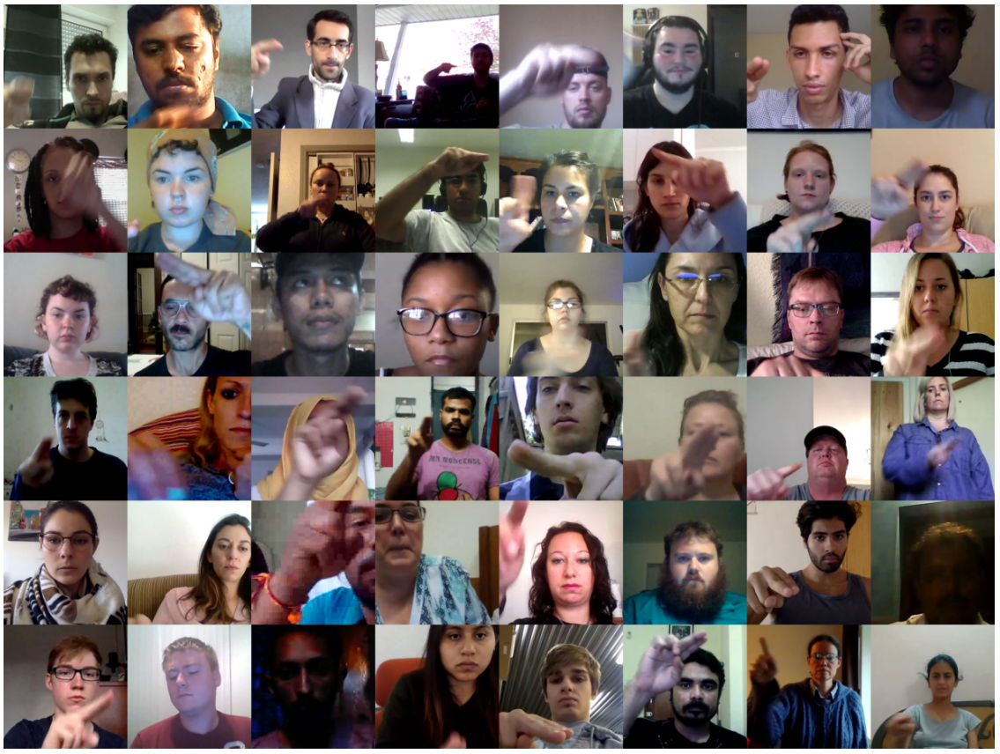
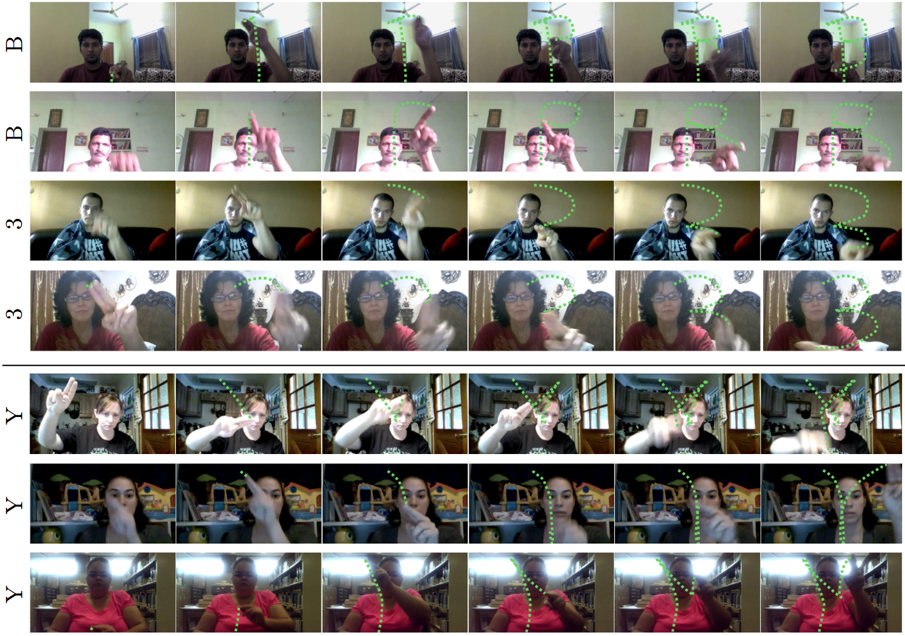
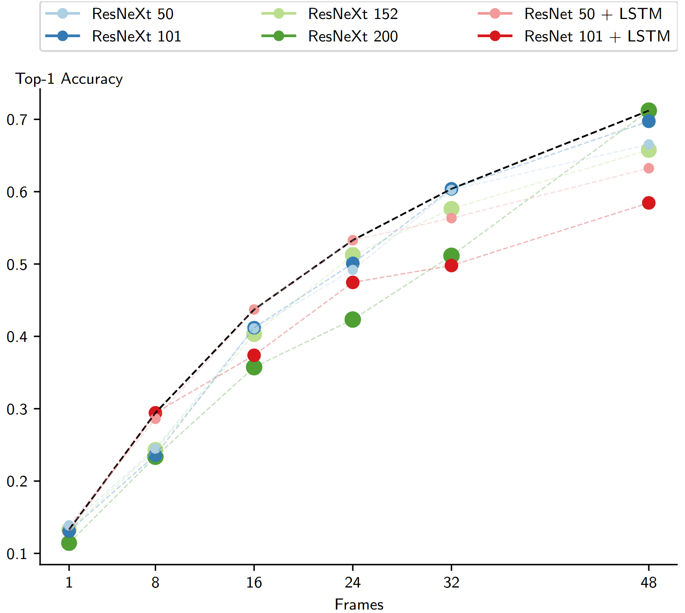
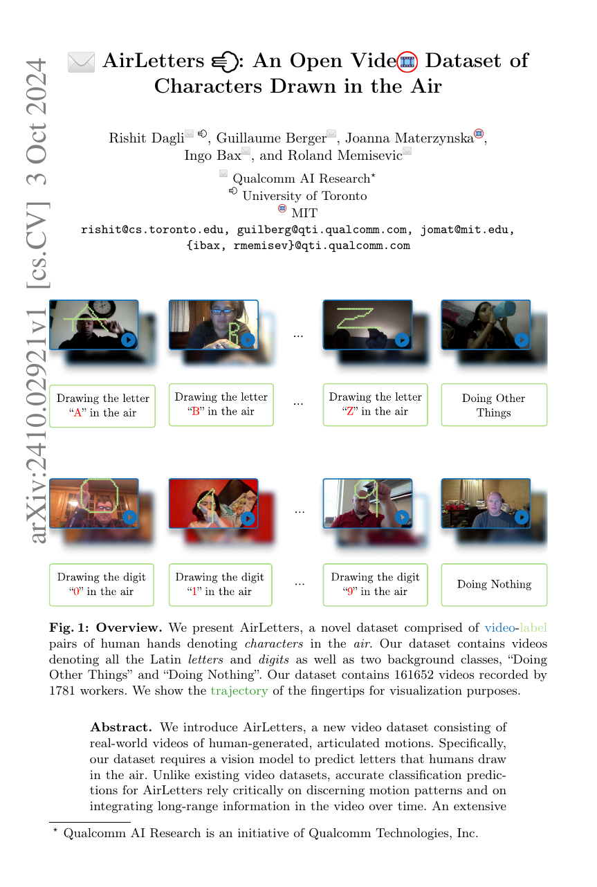

AirLetters is a new video dataset consisting of real-world videos of human-generated, articulated motions.
Abstract
Motivation
- We highlight a significant gap in current end-to-end video understanding and activity recognition methods: all models, especially large vision language models, perform well below human evaluation results. Human evaluation achieves near-perfect accuracy, while the task is challenging for all tested models. Unlike existing video datasets, accurate video understanding on our dataset requires detailed understanding of motion in the video and the integration of long-range temporal information across the entire video.
- This dataset requires models to attend through the entire video to perform well, and increasing the number of frames that models attend to significantly increases their performance.
- We show that classes such as the digits “0”, “1”, and “2” are particularly challenging, as they are easily confused with each other. In contrast, the contrast classes “Doing Nothing” and “Doing Other Things”, are more easily recognized which demonstrates the challenging nature of understanding precise motions for video understanding models.
Dataset Contents
We focus on manual articulations of each letter of the Latin alphabet as well as numeric digits. This amounts to 36 primary gesture classes, for which recognition requires temporal and spatial analysis of the video. The dataset also includes two contrast classes designed to refine the sensitivity and specificity of recognition systems trained on our dataset. The “Doing Nothing” class includes videos of individuals in non-active states, such as sitting or standing still, to represent periods of inactivity within human-computer interactions, and the “Doing Other Things” class consists of clips capturing miscellaneous, non-communicative movements such as adjusting position or random hand movements.

Figure: Diversity in our Dataset. Each of the images is taken from a randomly sampled video from our dataset. Our dataset has a large variance in the appearance of subjects, background, occlusion, and lighting conditions in the videos.
Our dataset has videos with precise articulated motion across many different frames instead of many other dataset which only need 1 frame or 2-4 frames to understand the video.

Figure: Challenges due to inter-class similarities and intra-class diversity. We show some examples of drawing the letter “B” and the digit of “3”, where differentiating both of these classes also requires understanding depth and velocity of relative motion to understand if the individual intended to draw a vertical line (for “B”) or only meant to place their hands in position (for “3”). Underneath, we show examples of variability in drawing the letter “Y”. For example, in one way version of drawing the letter “Y”, only the last few frames show a stroke that distinguishes it from the letter “X”.
Choosing a few key frames in our dataset does not help in understanding the video, and the entire video needs to be considered to understand the motion.

Figure: Scaling Training Frames. Performance of models across different numbers of training frames. The Pareto Frontier is represented by a black curve. Note that this dataset requires models to attend through the entire video to perform well, and increasing the number of frames that models attend to significantly increases their performance.
Dataset Statistics
| Statistic | Value |
|---|---|
| Total Statistics | |
| Videos | 161,652 |
| Training Split | 128,745 |
| Validation Split | 16,480 |
| Test Split | 16,427 |
| Classes | 38 |
| Actors | 1,781 |
| Frames | 40,142,100 |
| Median Statistics (with Standard Deviation) | |
| Duration | 2.93 (±0.13) |
| FPS | 30.0 (±0.0) |
| Videos per Class (×10³) | 4.04 (±1.31) |
| Videos per Actor | 40.0 (±99.29) |
Leaderboard
Classification accuracy of image models, video models, and (large) vision language models on AirLetters. Click column headers to sort.
| Method | Type | Top-1 Accuracy ↑ |
|---|---|---|
| ViT-B/16 | Image | 7.49 |
| MaxViT-T | Image | 7.56 |
| ResNet-200 | Image | 11.44 |
| ResNeXt-101 | Image | 13.09 |
| SE-ResNeXt-26 | Image | 13.29 |
| ResNet-50 | Image | 13.87 |
| VideoMAE (16) | Video | 57.96 |
| ResNet-101 + LSTM | Video | 58.45 |
| ResNet-50 + LSTM | Video | 63.24 |
| ResNeXt-152 3D | Video | 65.77 |
| Strided Inflated EfficientNet 3D | Video | 65.97 |
| ResNeXt-50 3D | Video | 66.54 |
| ResNeXt-101 3D | Video | 69.74 |
| ResNeXt-200 3D | Video | 71.20 |
| Video-LLaVA (w/o contrast class) | VLM | 2.53 |
| VideoLLaMA2 (w/o contrast class) | VLM | 2.47 |
| Video-LLaVA | VLM | 7.29 |
| VideoLLaMA2 | VLM | 7.58 |
| Human Performance (10 videos/class) | Human | 96.67 |
Overall results of different models on the AirLetters leaderboard. The best-performing model is in-bold. Note that the task is straightforward for humans but challenging for existing models.
Paper

AirLetters: An Open Video Dataset of Characters Drawn in the Air
Qualcomm AI Research, University of Toronto, MIT
Citation
@InProceedings{dagliairletters,
author="Dagli, Rishit and Berger, Guillaume and Materzynska, Joanna and Bax, Ingo and Memisevic, Roland",
title="AirLetters: An Open Video Dataset of Characters Drawn in the Air",
booktitle="Computer Vision -- ECCV 2024 Workshops",
year="2025",
publisher="Springer Nature Switzerland",
address="Cham",
pages="1--32",
isbn="978-3-031-91578-9"
}